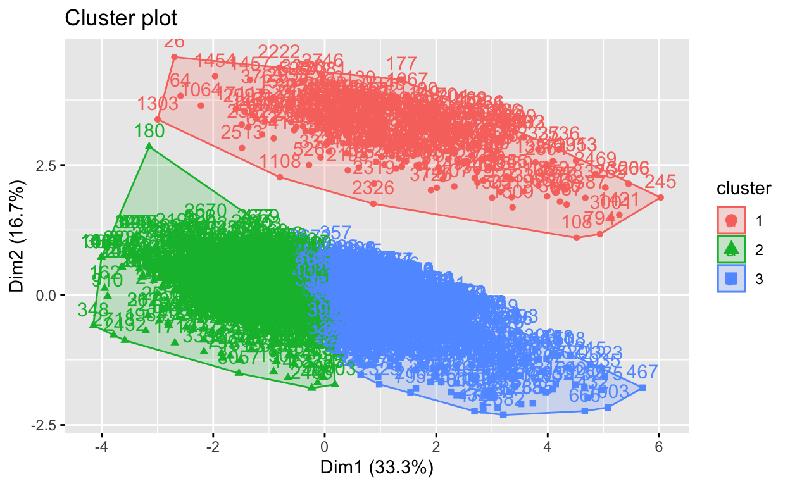

Introducción y Marco Teórico
Luego del Estallido Social en 2019, hay un renovado interés en la participación de la ciudadanía en la política, pues se buscan soluciones a las problemáticas que generaron las masivas protestas de ese año. La forma más básica de participación es la votación (Lijphart, 1997), sin embargo es notorio que el porcentaje de voto en Chile fue disminuyendo progresivamente y las muestras de participación ciudadana más básicas a no son las más utilizadas por la población (Leibe, Palanza y Sánchez, 2021). De esta manera, es importante mirar hacia otras formas de participación ciudadana, sea la protesta o el involucramiento en organizaciones de la sociedad civil, que permitan que las personas expresen sus necesidades y se sientan satisfechas con su sistema político.
El enfoque de este trabajo será en la forma de Participación Ciudadana más organizada en estas organizaciones de la sociedad civil. Este interés en particular surge de investigaciones previas sobre la participación ciudadana en la formación de planes reguladores de dos comunas, que muestran dos razones interesantes para la participación ciudadana en primer lugar. Por una parte cuando las personas consideran que la institución a nivel comunal es de fiar se ven motivadas a participar, debido que consideran que sus intervenciones si van a ser escuchadas. Por otra parte, vemos las teorías que son más apoyadas por la literatura (Tilly, 2000 y 2010; White, 2012; Cantillán y Herrera, 2020), que nos indican que mientras los vecinos tienen mayores similitudes pueden funcionar de mejor manera en este trabajo coordinado. El planteamiento es que la similitud entre individuos facilita la cohesión vecinal y elimina los roces que permiten una mejor comunicación y por lo tanto, favorecen la participación. En este trabajo más allá de ver la similitud, se busca analizar la cohesión vecinal como el mecanismo causal bajo el cual funciona las teorías previamente mencionadas. El interés del trabajo es finalmente analizar cuál de estas dos condicionantes son más relevantes para la efectiva participación de personas en el ámbito subnacional.
Para esto definimos entonces tres variables de interés para este trabajo:
A. Participación Ciudadana
i. Definición
De una manera poco elegante la participación ciudadana implica normalmente cualquier forma de participación que vaya más allá del mero hecho de votar en las elecciones rutinarias por representantes políticos. Muchas veces es visto como una forma de profundizar la democracia dentro de les ciudadanes, dando rienda suelta a variadas versiones de democracia entre las que se encuentran deliberativa, directa, agonística, etc. (Smith, 2009). En Chile la experiencia de la participación ciudadana es mediada por la existencia de la dictadura y su definición de política que lo aleja de la población (De la Fuente, 2013). La recuperación democrática en Chile implica la inclusión de la ciudadanía y un esfuerzo explícito por parte de los gobiernos de Lagos y Bachelet de volver a llevar la democracia a la ciudadanía (De la Fuente, 2013). Esto refleja las definiciones de democracia participativa que plantea Pateman (1970) cuando menciona la importancia de llevar instancias democráticas a espacios cercanos para el común de las personas cómo el lugar de empleo y los barrios. Debido a la dificultad chilena de sindicalización, una atadura de la época dictatorial, se toma la democracia participativa en esta otra dimensión, siendo importante lo territorial, que se aplica fácilmente a lo que se busca medir en este trabajo: el espacio subnacional.
ii. Operacionalización
Tomando en cuenta la breve definición hecha a sobre la participación ciudadana en Chile, debemos analizar como es que vamos a medirla. En el caso de este trabajo buscaremos la participación ciudadana en el barrio, en el territorio, finalmente en la comuna. Dada la experiencia previa en otros trabajos, se ha visto como periódicamente se ha desarticulado la forma básica de participación ciudadana en Chile: la junta de vecinos. La junta de vecinos tiene una larga data de existencia en el país, apareciendo en 1887, con la Ley de Organización y Atribuciones Municipales (Cáceres et al, 1983). Dada la historia chilena y la importancia de la junta de vecinos como lugar de participación democrática primaria, en este trabajo se operacionalizará la Participación Ciudadana como el nivel de participación en juntas de vecinos de cada comuna.
B. Confianza en las instituciones
i. Definición
La fuente teórica de esta variable se encuentra en la idea de la cultura política de Almond y Verba (1963). Se define la cultura política como un conjunto de orientaciones evaluativas, afectivas y cognitivas hacia una serie de objetos políticos. Sin embargo hay otros estudios neurocientíficos posteriores que hacen dudar de las diferencias reales entre lo cognitivo y lo afectivo y su efecto en lo evaluativo (Marcus, 2013; Eagly y Chaiken, 1998). A pesar de lo anterior, el punto de Almond y Verba (1963) se mantiene, particularmente con respecto a los objetos políticos hacia los que se manifiestan estas orientaciones. Para los autores son cuatro: 1. La institucionalidad en sí, 2. El rol que tiene el individuo dentro de la política, 3. La forma en que se desarrolla la política y 4. Los outcomes de estos procesos políticos. Además, se menciona que puede haber congruencia entre el tipo de sistema político y las orientaciones que tiene el individuo, sobre todo en términos de lealtad o alienación respecto del sistema, dada si las orientaciones son positivas o negativas.
ii. Operacionalización
Vemos que el concepto de cultura política de Almond y Verba abarca bastantes aspectos y que cada uno puede ser operacionalizado de una manera en particular. Es más, ellos ya encuentran la posibilidad de la alienación como uno de los resultados de las orientaciones negativas hacia las instituciones. No está de más recordar cómo es que la alienación puede efectivamente cohibir la participación ciudadana en los espacios previamente mencionados. Dados los hallazgos previos, es coherente para los objetivos de esta investigación el trabajar analizando las orientaciones hacia el cuarto tipo de objeto político: los outputs y las orientaciones específicas que se buscan analizar es el aspecto evaluativo. Esto debido a que se acerca más a lo que se busca modelar, como es que la valoración hacia las municipalidades y las consecuencias de su trabajo puede afectar la participación ciudadana en otras áreas de participación ciudadana. Entonces lo que se quiere medir con esta variable es la percepción de la ciudadanía hacia los outputs políticos de las municipalidades.
C. Cohesión Vecinal
i. Definición
Cómo ya fue mencionado en la introducción, la cohesión vecinal es la forma en la que se expresa las teorías previas sobre la participación de las personas en organizaciones como las juntas de vecinos. En este caso White (2012) tiene la contribución más relevante a lo que planteamos debido a la importancia de estructuras previas a las formaciones sociales. Si entendemos que las juntas de vecinos son formaciones sociales, lo que implicaría que la teoría es que necesitamos de una estructura previa para que la formación social pueda emerger. En este caso la cohesión entre los vecinos sería esta estructura previa que es independiente de la formación social, que luego permitiría que las personas quieran organizarse. De esta forma vemos que la cohesión vecinal es más bien el mecanismo causal que permite entender la importancia de las formaciones sociales.
ii. Operacionalización
La cohesión vecinal no es una variable que se pueda medir de manera directa, por lo que hay que buscar otras variables que si puedan representar a lo que nos referimos cuando lo mencionamos. En este caso, para medir la cohesión vecinal vamos a utilizar la confianza en los vecinos y la confianza en la vecindad de manera más amplia. Un poco más adelante se explica de manera más específica cuales son las variables que se utilizan para la creación de un índice de cohesión vecinal.
Análisis exploratorio
Para poder medir las tres variables se utiliza una base de datos desarrollada por RIMISP en base a la Encuesta de Dinámicas Territoriales y Bienestar -EDTB- (La base de datos se puede encontrar en el siguiente link: https://dataverse.harvard.edu/dataset.xhtml?persistentId=doi:10.7910/DVN/G9ENDE). Esta encuesta se realiza en comunas de cuidades medianas y pequeñas de tres países, pero dividen las bases de datos según países, siendo la que se utiliza la chilena. Si bien esto tiene algunas debilidades, debido a que no es explorable hacia ciudades más grandes, si da la posibilidad de explorar las situaciones de comunas más pequeñas. Estos históricamente han sido desfavorecidos, para dar espacio al estudio de comunas más grandes, en particular las que corresponden a la ciudad de Santiago.
La EDTB pregunta una serie de información a vecinos de estas comunas sobre el bienestar y características sociodemográficas, pero para esto se realiza una serie de filtros para dejar las preguntas más relevantes. Se dejan algunas de las preguntas básicas sobre género, nivel educacional, nombre de la comuna y otros. Además se deja la pregunta l_15h que consulta sobre la participación del vecino en organizaciones vecinales, principalmente juntas de vecinos. Además hay preguntas sobre los outputs políticos en la entrega de servicios como la seguridad, recolección de basura, mantenimiento de calles y protección civil (1_19a, b, c y d). La tercera y última variable se encuentra en preguntas relevantes sobre la confianza que tienen las personas en sus vecinos (l_12, l_13, l_14, l_20g, l_25a y m_3e). Otras variables que tienen valor teórico como variables de control son si participan en las elecciones municipales (l_1 y l_5), interés en asuntos políticos (l_6, l_8) y acercamiento a autoridades (l_16b). Primero se hará una modificación de las variables necesarias.
Para hacer un análisis preliminar y exploratorio se hará un análisis de algunas de las preguntas en gráficos descriptivos para hacerse a la idea del funcionamiento de la base de datos. Los gráficos se harán en base a las dos primeras variables, pues son las que son medidas de manera más directa en la encuesta que fue aplicada.
El primer gráfico para analizar es el de la participación en organizaciones vecinales. La pregunta está dispuesta en una respuesta dicotómica y vemos que la gran mayoría de personas no participan en organizaciones vecinales.
df_jjvv %>%
ggplot(aes(x = as.factor(jjvv))) +
geom_bar(color = '#000000' , alpha = 0.5)+
labs(title = str_wrap("Figura 1. Gráfico de barras 'Participación en organización vecinal'(jjvv)"),
subtitle = str_wrap("Pregunta: '¿En el último año usted ha participado de manera activa en alguno de los siguientes grupos u organizaciones? Organización vecinal (asociación de vivienda o junta de vecinos)'", 70),
x= "", y = "Frecuencia") +
scale_x_discrete(breaks= c("1", "0", NA),
labels = c("Si", "No", "No sabe/No responde"))+
theme_minimal()Luego vemos las variables que miden la evaluación de servicios comunales, lo cual puede ser entendido como una orientación evaluativa de los outputs políticos a nivel comunal.
frq(df_jjvv, eval_guardia)eval_guardia <categorical>
# total N=4007 valid N=3136 mean=0.63 sd=0.48
Value | N | Raw % | Valid % | Cum. %
---------------------------------------
0 | 1156 | 28.85 | 36.86 | 36.86
1 | 1980 | 49.41 | 63.14 | 100.00
<NA> | 871 | 21.74 | <NA> | <NA>df_jjvv %>%
ggplot(aes(x = as.factor(eval_guardia))) +
geom_bar(color = '#000000' , alpha = 0.5)+
labs(title = str_wrap("Figura 2. Gráfico de barras 'Evaluación Servicios Comuna 1'(eval_guardia)"),
subtitle = str_wrap("Pregunta: '¿Cómo evaluaría usted la calidad de los siguientes servicios que existen en esta comuna? Seguridad Ciudadana (Guardia Municipal)'"),
x= "", y = "Frecuencia") +
scale_x_discrete(breaks= c("0", "1", NA),
labels = c("Mala/Muy Mala", "Buena/Muy Buena", "No responde/No aplica"))+
theme_minimal()frq(df_jjvv, eval_basura)eval_basura <categorical>
# total N=4007 valid N=3906 mean=0.83 sd=0.38
Value | N | Raw % | Valid % | Cum. %
---------------------------------------
0 | 673 | 16.80 | 17.23 | 17.23
1 | 3233 | 80.68 | 82.77 | 100.00
<NA> | 101 | 2.52 | <NA> | <NA>df_jjvv %>%
ggplot(aes(x = as.factor(eval_basura))) +
geom_bar(color = '#000000' , alpha = 0.5)+
labs(title = str_wrap("Figura 3. Gráfico de barras 'Evaluación Servicios Comuna 1'(eval_basura)"),
subtitle = str_wrap("Pregunta: '¿Cómo evaluaría usted la calidad de los siguientes servicios que existen en esta comuna? Recolección de basura'"),
x= "", y = "Frecuencia") +
scale_x_discrete(breaks= c("0", "1", NA),
labels = c("Mala/Muy Mala","Buena/Muy Buena", "No responde/No aplica"))+
theme_minimal()frq(df_jjvv, eval_calles)eval_calles <categorical>
# total N=4007 valid N=3864 mean=0.62 sd=0.49
Value | N | Raw % | Valid % | Cum. %
---------------------------------------
0 | 1486 | 37.09 | 38.46 | 38.46
1 | 2378 | 59.35 | 61.54 | 100.00
<NA> | 143 | 3.57 | <NA> | <NA>df_jjvv %>%
ggplot(aes(x = as.factor(eval_calles))) +
geom_bar(color = '#000000' , alpha = 0.5)+
labs(title = str_wrap("Figura 4. Gráfico de barras 'Evaluación Servicios Comuna 1'(eval_calles)"),
subtitle = str_wrap("Pregunta: '¿Cómo evaluaría usted la calidad de los siguientes servicios que existen en esta comuna? Mantenimiento de calles y vias'"),
x= "", y = "Frecuencia") +
scale_x_discrete(breaks= c("0", "1", NA),
labels = c("Mala/Muy Mala", "Buena/Muy Buena", "No responde/No aplica"))+
theme_minimal()frq(df_jjvv, eval_proteccion)eval_proteccion <categorical>
# total N=4007 valid N=2975 mean=0.62 sd=0.49
Value | N | Raw % | Valid % | Cum. %
---------------------------------------
0 | 1131 | 28.23 | 38.02 | 38.02
1 | 1844 | 46.02 | 61.98 | 100.00
<NA> | 1032 | 25.75 | <NA> | <NA>df_jjvv %>%
ggplot(aes(x = as.factor(eval_proteccion))) +
geom_bar(color = '#000000' , alpha = 0.5)+
labs(title = str_wrap("Figura 5. Gráfico de barras 'Evaluación Servicios Comuna 1'(eval_proteccion)"),
subtitle = str_wrap("Pregunta: '¿Cómo evaluaría usted la calidad de los siguientes servicios que existen en esta comuna? Protección civil, por ejemplo, frente a terremotos, inundaciones u otros desastres naturales'"),
x= "", y = "Frecuencia") +
scale_x_discrete(breaks= c("0", "1", NA),
labels = c("Mala/Muy Mala", "Buena/Muy Buena", "No responde/No aploca"))+
theme_minimal()Vemos que en la mayoría de los casos la gente tiende a tener una buena o decente evaluación de los servicios comunales, pero hay una mayor varianza en las evaluaciones de Protección civil, Seguridad Ciudadana y Mantenimiento de calles.
Para continuar nuestra exploración de la base de datos de la EDTB, se realizarán unas primeras regresiones para analizar de manera preliminar las relaciones entre las variables más esenciales. El tipo de regresión a utilizar es una de tipo logit, debido a que la variable dependiente es una variable de tipo categórica dummy, es decir, está o no está. En este caso nuestra variable tiene dos posibilidades, participa o no en una junta de vecinos. Las columnas utilizamos para describir nuestra variable de outputs políticos son preguntas del 1 al 4 en términos de percepción de la entrega de estos servicios de parte de la población. Estas variables fueron recodificadas para que fuesen binarias, es decir, que tomen un valor de un 0 o un 1, “1” significa que tienen una evaluación buena o muy buena de los servicios. Inicialmente se correrán cinco regresiones, una con cada una de las variables y una final con las cuatro juntas. Ninguna otra variable quedará en este análisis inicial.
Primeros Modelos
modelo_1 <- glm(jjvv ~ eval_guardia,
data = df_jjvv,
family = binomial("logit"))
modelo_2 <- glm(jjvv ~ eval_basura,
data = df_jjvv,
family = binomial("logit"))
modelo_3 <- glm(jjvv ~ eval_calles,
data = df_jjvv,
family = binomial("logit"))
modelo_4 <- glm(jjvv ~ eval_proteccion,
data = df_jjvv,
family = binomial("logit"))
modelo_5 <- glm(jjvv ~ eval_guardia + eval_basura + eval_calles + eval_proteccion,
data = df_jjvv,
family = binomial("logit"))
modelos <- list(modelo_1, modelo_2, modelo_3, modelo_4, modelo_5)
======================================================================================
Model 1 Model 2 Model 3 Model 4 Model 5
--------------------------------------------------------------------------------------
(Intercept) -1.18 *** -1.16 *** -1.08 *** -1.08 *** -1.12 ***
(0.07) (0.09) (0.06) (0.07) (0.13)
eval_guardia1 -0.22 * -0.05
(0.09) (0.11)
eval_basura1 -0.14 0.12
(0.10) (0.14)
eval_calles1 -0.29 *** -0.18
(0.08) (0.12)
eval_proteccion1 -0.28 ** -0.23 *
(0.09) (0.11)
--------------------------------------------------------------------------------------
AIC 3199.91 4047.72 4014.19 3110.78 2633.48
BIC 3211.98 4060.23 4026.68 3122.75 2662.70
Log Likelihood -1597.95 -2021.86 -2005.09 -1553.39 -1311.74
Deviance 3195.91 4043.72 4010.19 3106.78 2623.48
Num. obs. 3099 3852 3803 2935 2550
======================================================================================
*** p < 0.001; ** p < 0.01; * p < 0.05Cómo podemos apreciar, todas las variables tienen significancia estadística, exceptuando la variable que mide la percepción del servicio de Recolección de Basura. Cuando medimos las cinco variables juntas vemos que la única que tiene significancia estadística es la percepción del servicio de Protección Civil en casos de emergencia, esto se puede deber a que las cuatro variables estén altamente correlacionadas, lo que nos indica que el mejor camino a tomar es formar un índice con las cuatro preguntas. En términos de direccionalidad vemos que cuando sube la evaluación de los servicios municipales, baja la probabilidad de que el individuo participe en las juntas de vecinos. Esto mismo vemos cuando analizamos los Odds de las regresiones:
(Intercept) eval_guardia1
0.3084005 0.8018735 (Intercept) eval_basura1
0.3127490 0.8733073 (Intercept) eval_calles1
0.3391705 0.7469203 (Intercept) eval_proteccion1
0.3401937 0.7561029 Por ejemplo, cuando una persona tiene una evaluación positiva de la guardia municipal, la probabilidad de que participe en una junta de vecinos es de 0.8, lo que en términos de probabilidad, significa que disminuye. Este patrón se ve en todas las variables, aunque entre las que son significativas (todas menos Recolección de Basura), la que tiene un Odd más grande es la evaluación de la Guardia Municipal. En términos de comportamiento esto nos indica que las personas tienden a participar más en las juntas de vecinos cuando las evaluaciones de los servicios públicos de la comuna son negativos.
Modelo a utilizar
Esto nos lleva a plantear nuestro modelo que luego va a ser utilizado en el resto del trabajo:
\[Participación\ Juntas\ de\ Vecinos = \alpha + \ Evaluación\ Servicios\ X_1+ Cohesión\ vecinal\ X_2 + \\ Participación\ Elecciónes\ X_3+ Interés\ en\ asuntos\ políticos\ X_4 + Género\ X_5 + \\ Edad\ X_6+ Estado\ laboral\ X_7 + Comuna\ rural\ X_8 + \mu \]
Las variables de Evaluación de Servicios, Cohesión Vecinal e Interés en asuntos políticos serán índices. Evaluación de Servicios implican las variables ya evaluadas, Cohesión Vecinal incluye preguntas respecto a la cantidad de números de teléfonos de vecinos que tiene el individuo (n_telefono, n_otorgado), si les pide ayuda a vecinos en casos de necesidad y opiniones sobre la ayuda (ayuda_de_vecino, opinion_ayuda), el nivel de confianza en los vecinos (confianza_vecinos) y la satisfacción que tienen con su barrio de manera más general (satisfacción_barrio).
Las variables de control serán Participación electoral, Interés en Asuntos Políticos y variables sociodemográficas. Participación electoral se mide cuando se pregunta si es que participó de elecciones municipales y las sociodemográficas tienen que ver con género, edad, estado laboral y si la comuna es rural. Interés en Asuntos Políticos se medirá con la variable ‘interés_politico’, que pregunta directamente esto. Se sumarán además otras variables sobre participación en organizaciones políticas (org_politica, sindicato, campaña), opinión sobre la democracia (opinion_democracia) y comportamiento del voto de manera más amplia (voto_comp). Se separa el voto y el comportamiento general del voto, pues se entiende que hay una diferencia entre el voto en una ocasión particular y el voto como un hábito, que muestra el interés en la política de manera más general que puntual.
Participación en elecciones es utilizado como una variable de control se entiende que el voto es una forma primera de participación, previa al involucramiento en organizaciones (Lijphart, 1997). Además, se ve que la mayoría de las personas que participan en las movilizaciones en 2019 si eran personas que votaban (Leibe, Palanza y Sánchez, 2021), por lo que se puede esperar que sea similar en el caso de la participación ciudadana. El Interés en la Política se ve como esencial para la participación en elecciones (Blais, Young y Lapp, 2000), por lo que es interesante ver cómo afecta en otras formas de participación.
Hipótesis
Teniendo en cuenta la exploración previa y la teoría veríamos que la direccionalidad de la Evaluación de Servicios y la Cohesión Vecinal es bastante clara. Mientras la mejor sea la Evaluación de Servicios del municipio, menor la participación en juntas de vecinos. Mientras mayor sea la Cohesión Vecinal, mayor debiese ser la participación en juntas de vecinos. Queda ahora la pregunta de ¿Cuál es más importante? En este sentido (y sumado a las hipótesis nulas de rigor) tendríamos dos hipótesis.
Hipótesis 1
La probabilidad de participar en la junta de vecinos está más influenciada por la Evaluación de Servicios Municipales que por la Cohesión Vecinal.
Hipótesis 2
La probabilidad de participar en la junta de vecinos está menos influenciada por la Evaluación de Servicios Municipales que por la Cohesión Vecinal.
Creación de Índices
Índice de Evaluación de Servicios
Debido a los resultados exploratorios y la sospecha de alta correlación entre las variables de Evaluación de Servicios Municipales, se analiza la posibilidad de generar un índice con las variables, por lo que se utiliza la técnica PCA. Lo primero que debemos hacer es un análisis de correlación entre las cuatro variables.
eval_guardia1 eval_basura1 eval_calles1
eval_guardia1 1.0000000 0.2246098 0.3350290
eval_basura1 0.2246098 1.0000000 0.3672793
eval_calles1 0.3350290 0.3672793 1.0000000
eval_proteccion1 0.3836664 0.2953453 0.4136563
eval_proteccion1
eval_guardia1 0.3836664
eval_basura1 0.2953453
eval_calles1 0.4136563
eval_proteccion1 1.0000000Vemos que las cuatro variables tienen una buena correlación, aunque no sea demasiado alta, lo cual era sospechado previamente en los análisis exploratorios y las primeras regresiones. Luego procedemos a generar un PCA, además de analizar los eigenvalues y generar el Scree plot para decidir cuáles serán los pesos de las dimensiones que se incluyan en el índice final.
eigenvalue variance.percent cumulative.variance.percent
Dim.1 1.8631631 46.57908 46.57908
Dim.2 0.8481190 21.20298 67.78205
Dim.3 0.6832307 17.08077 84.86282
Dim.4 0.6054871 15.13718 100.00000En el Scree plot vemos que solamente la primera variable pasa el límite deseable de 1, pero cuando analizamos los eigenvalues y el aporte que hacen a la varianza de la muestra, esto no es suficiente para la creación del índice por sí solo. Para analizar de manera más profunda cuáles son las dimensiones para utilizar para crear el índice, se analizarán las contribuciones de las variables a cada una de las dimensiones.
Dado que las cuatro variables responden a la Evaluacion de Servicios municipales, no hay grandes diferencias teóricas respecto de las diferentes dimensiones, por lo que se eligen respecto a la representación de variables en las dimensiones. Gracias a estos gráficos vemos que si incluimos las tres primeras dimensiones tenemos una representación de las cuatro preguntas, aunque vemos que la que menos aporta es la de Protección Civil. Esto tiene sentido, pues es una pregunta que refiere a casos extremos o emergencias, por lo que es comprensible que muchas personas no les interese, además es la variable con más NA. De esta manera se eligen las tres primeras dimensiones, porque a pesar de que las Dimensiones 2 y 3 no superan el límite en el Scree Plot, si aportan a la varianza explicada y a la representación de las cuatro variables en el índice. A continuación se forma el índice:
indice_evaluacion <- pca_evaluacion$ind$coord %>%
as_tibble() %>%
mutate(evaluacion_serv = (Dim.1 * 46.57908 + Dim.2 * 21.20298 + Dim.4 *17.08077)/84.86282)
df_jjvv <- df_jjvv %>%
bind_cols(indice_evaluacion %>% select(evaluacion_serv))
rescale01 <- function(x) {
rng <- range(x, na.rm = TRUE)
(x - rng[1]) / (rng[2] - rng[1])
}
df_jjvv <- df_jjvv %>%
mutate(evaluacion_serv = rescale01(evaluacion_serv))Índice de Cohesión Vecinal
El proceso de creación de índice de Cohesión Vecinal es muy similar al de Evaluación de Servicios Municipales, aunque es por otras razones. La Cohesión Vecinal es una variable latente, pero no observable, por lo que utilizamos variables observables en conjunción como un proxy para el análisis de la variable que nos interesa. En este caso utilizamos las variables que se mencionaron cuando se definió el Modelo a utilizar. A continuación analizamos la correlación entre las siete variables.
n_telefono n_otorgado dinero_prestado
n_telefono 1.00000000 0.88820690 0.17638662
n_otorgado 0.88820690 1.00000000 0.16511922
dinero_prestado 0.17638662 0.16511922 1.00000000
ayuda_de_vecino 0.17584210 0.18190099 0.07426899
confianza_vecinos 0.17833443 0.16727249 0.12322545
opinion_ayuda 0.05364280 0.05375590 0.07700295
satisfaccion_barrio 0.08652419 0.08243431 0.04191447
ayuda_de_vecino confianza_vecinos opinion_ayuda
n_telefono 0.175842103 0.178334432 0.0536427998
n_otorgado 0.181900987 0.167272485 0.0537559013
dinero_prestado 0.074268987 0.123225450 0.0770029463
ayuda_de_vecino 1.000000000 0.089437797 0.0252066755
confianza_vecinos 0.089437797 1.000000000 -0.0037659467
opinion_ayuda 0.025206675 -0.003765947 1.0000000000
satisfaccion_barrio 0.003255339 0.302254957 0.0004817192
satisfaccion_barrio
n_telefono 0.0865241876
n_otorgado 0.0824343134
dinero_prestado 0.0419144686
ayuda_de_vecino 0.0032553386
confianza_vecinos 0.3022549569
opinion_ayuda 0.0004817192
satisfaccion_barrio 1.0000000000
Vemos que lamentablemente las cuatro variables no tienen muy buena correlación entre sí, a excepción de las variables de número de teléfono. Esto es porque tiene sentido lógico, pues tener los teléfonos de tus vecinos no es una relación unidireccional, sino que cuando te dan el número de tu vecino, en general das tu número para que el contacto sea bilateral. Si bien la situación respecto de la correlación no es ideal desde un punto de vista teórico, se continua con el proceso de generar un PCA y su Scree Plot.
eigenvalue variance.percent cumulative.variance.percent
Dim.1 2.1232360 30.331942 30.33194
Dim.2 1.2064438 17.234912 47.56685
Dim.3 1.0208149 14.583070 62.14992
Dim.4 0.9335181 13.335973 75.48590
Dim.5 0.9069322 12.956175 88.44207
Dim.6 0.6960655 9.943793 98.38586
Dim.7 0.1129895 1.614136 100.00000Un análisis entre el Scree Plot y los eigenvalues del PCA nos indica que lo mejor es utilizar las tres primeras dimensiones, pues pasan el umbral que vemos en el Scree Plot y logran reprsentar una buena cantidad de la varianza de la muestra.
Cuando vemos las dimensiones podemos ver las dimensiones teóricas de manera clara: - La Dimensión 1 presenta esta idea clara de la comunicación con tus vecinos, representada por los números de teléfonos intercambiados. - La Dimensión 2 se puede ver como la confianza con la comunidad, sea con el barrio de manera abstracta o con los vecinos de manera más concreta. - La Dimensión 3 vemos la importancia de la ayuda mutua dentro de la comunidad como una muestra de la cohesión con los vecinos.
A partir de esto generamos un índice:
Dim.1 Dim.2 Dim.3 Dim.4 Dim.5
1 -0.8736164 0.05372258 1.1390261 -0.15326220 0.2283102
2 0.8367040 -0.77085736 1.6126805 -0.74239468 -0.8963016
3 -1.0185529 -0.27478406 1.5729141 -0.42857975 -0.1966695
4 0.1200686 -2.59091378 -0.2040291 0.22390055 -1.7604759
5 1.0198335 1.12437480 -0.7375057 -0.41360856 -0.1967383
6 0.9426278 -1.44200892 1.6775492 -0.02825462 -1.5310394indice_cohesion <- pca_cohesion$ind$coord %>%
as_tibble() %>%
mutate(indice_cohesion_vecinal = (Dim.1 * 30.331942 + Dim.2 * 17.234912 + Dim.3 *14.583070)/62.14992)
df_jjvv <- df_jjvv %>%
bind_cols(indice_cohesion %>% select(indice_cohesion_vecinal))
rescale01 <- function(x) {
rng <- range(x, na.rm = TRUE)
(x - rng[1]) / (rng[2] - rng[1])
}
df_jjvv <- df_jjvv %>%
mutate(indice_cohesion_vecinal = rescale01(indice_cohesion_vecinal))Análisis de Cluster del Índice de Cohesión Vecinal
Debido a que la Cohesión Vecinal fue la única variable que no fue posible analizar en los análisis preliminares, se hará un análisis de Clusters para poder entender mejor la muestra que obtenemos. Debido a la cantidad de variables no podemos hacer un análisis de distancia, así que pasamos directamente al análisis de Clusters con un Cluster plot. Se prueba hace un plot con dos Clusters y el resultado es el siguiente:
De manera visual podemos asumir que se forman dos clusters, uno en la parte superior y otra en la parte inferior. Sin embargo, cuando de manera matemática vemos los dos clusters separados por la sección derecha e izquierda, lo cual no corresponde con la intuición visual, por lo que se prueba con tres Clusters en el siguiente gráfico:

Vemos que se forman tres clusters de una manera un poco más intuitiva, pues el Cluster en la parte superior es más claro, aunque la separación entre los Clusters 1 y 3 son bastante poco distintivos. A partir de esto se prueba hacer 4 Clusters:
Vemos que el segundo Cluster visual es separado en tres y las distancias entre los Clusters 2, 3 y 4 es imposible de analizar. De esta manera se comprende que vemos una diferencia muy fuerte entre quienes confían en su comunidad (Dim.2) y quienes contactan a su comunidad (Dim.1). Si bien desde un punto de vista intuitivo esto tiene sentido, desde un punto de vista Matemático R no logra hacer esta diferenciación de manera directa.
Índice de Interés Político
El último índice para realizar es el que fue mencionado como una variable de control, el Índice de Interés Político, para el cual utilizamos las variables que mencionamos previamente cuando se presenta el modelo. El primer paso para el PCA es como siempre el análisis de correlación de las seis variables.
voto_comp1 interes_politico1 campaña1
voto_comp1 1.00000000 0.31728745 0.14915766
interes_politico1 0.31728745 1.00000000 0.36497876
campaña1 0.14915766 0.36497876 1.00000000
org_politica1 0.08913216 0.20182175 0.17752303
sindicato1 0.01993304 0.05913244 0.03058523
opinion_democracia1 0.06306662 0.10087202 0.07106377
org_politica1 sindicato1 opinion_democracia1
voto_comp1 0.089132158 0.019933038 0.06306662
interes_politico1 0.201821749 0.059132442 0.10087202
campaña1 0.177523026 0.030585229 0.07106377
org_politica1 1.000000000 0.008634996 0.01720945
sindicato1 0.008634996 1.000000000 0.03812566
opinion_democracia1 0.017209454 0.038125663 1.00000000Vemos nuevamente que las correlaciones no son tan fuertes como se esperaría para un PCA, pero se continúa con el proceso para analizar los eigenvalues y el Scree Plot.
eigenvalue variance.percent cumulative.variance.percent
Dim.1 1.6890436 28.15073 28.15073
Dim.2 1.0217910 17.02985 45.18058
Dim.3 0.9635140 16.05857 61.23914
Dim.4 0.9163101 15.27184 76.51098
Dim.5 0.8248915 13.74819 90.25917
Dim.6 0.5844498 9.74083 100.00000A partir de esto vemos que las primeras tres dimensiones superan el umbral para entrar dentro de un índice y estas representan un buen porcentaje de la varianza de la muestra, por lo que pasamos a ver las dimensiones.
Vemos que la primera dimensión se ve representada por la pregunta directa sobre interés político, por lo que puede ser definida como esto. La segunda y la tercera dimensión no tienen mucha diferencia respecto de las variables que contribuyen y ambas pueden ser catalogadas como democratización fuera de las elecciones, sobre todo cuando consideramos la sindicalización como una fuente de democratización, según Pateman (1970). Sin embargo, esta indistinción entre las dos dimensiones lleva a cuestionar la presencia de ambas en el índice, por lo que se analiza la cuarta dimensión, que si bien no pasa el umbral en el Scree Plot, si está bastante cerca y aporta a la varianza un porcentaje muy similar a la dimensión 3. La dimensión 4 es el comportamiento político de manera más concreta, es decir, la participación en organizaciones políticas y el votar de manera habitual. De esta manera, se decide utilizar la dimensión 4 y no la tercera dentro de la formación del índice a continuación:
Dim.1 Dim.2 Dim.3 Dim.4 Dim.5
1 0.4741961 0.4897557 -0.7873625 0.2459174 0.23919599
2 -1.1762846 0.5964792 -0.6686209 1.0451893 -0.06227916
3 -1.6097133 0.6316335 -0.5134091 1.6483636 -0.48386172
4 -1.8969740 -0.2816605 0.5335900 1.0661420 -0.63903754
5 1.4361324 0.4881775 -0.9844520 -0.5981912 0.48081425
6 0.4208505 0.5359962 -0.8274377 0.1506604 0.15925559indice_interes <- pca_interes$ind$coord %>%
as_tibble() %>%
mutate(indice_interes_pol = (Dim.1 * 28.15073 + Dim.2 * 17.02985 + Dim.4 *15.27184)/60.54242)
df_jjvv <- df_jjvv %>%
bind_cols(indice_interes %>% select(indice_interes_pol))
rescale01 <- function(x) {
rng <- range(x, na.rm = TRUE)
(x - rng[1]) / (rng[2] - rng[1])
}
df_jjvv <- df_jjvv %>%
mutate(indice_interes_pol = rescale01(indice_interes_pol))Modelos y Resultados Finales
Utilizando los índices previamente creados y las variables de control, creamos la siguiente regresión logística y a partir de esto vemos además los resultados de esta.
modelo_6 <- glm(jjvv ~ evaluacion_serv + indice_interes_pol + indice_cohesion_vecinal + voto + mujer + edad + trabajo + rural,
data = df_jjvv,
family = binomial("logit"))
screenreg(modelo_6)
=====================================
Model 1
-------------------------------------
(Intercept) -3.92 ***
(0.22)
evaluacion_serv -0.60 ***
(0.14)
indice_interes_pol 1.66 ***
(0.37)
indice_cohesion_vecinal 3.56 ***
(0.30)
voto1 0.35 ***
(0.09)
mujer1 0.34 ***
(0.09)
edad 0.00
(0.00)
trabajo1 0.14
(0.09)
rural1 0.67 ***
(0.08)
-------------------------------------
AIC 3811.08
BIC 3867.53
Log Likelihood -1896.54
Deviance 3793.08
Num. obs. 3915
=====================================
*** p < 0.001; ** p < 0.01; * p < 0.05Vemos que las direccionalidades de las variables responden a lo que previamente se planteó: la direccionalidad de la Evaluación de Servicios es negativa y la de Cohesión Vecinal es positiva. Vemos además que todas las variables exceptuando edad y estado laboral son significativas, por lo que se forma un nuevo modelo que no tome en cuenta estas dos variables.
modelo_7 <- glm(jjvv ~ evaluacion_serv + indice_interes_pol + indice_cohesion_vecinal + voto + mujer + rural,
data = df_jjvv,
family = binomial("logit"))
modelos_2 <- list(modelo_6, modelo_7)
screenreg(modelos_2)
===================================================
Model 1 Model 2
---------------------------------------------------
(Intercept) -3.92 *** -3.68 ***
(0.22) (0.20)
evaluacion_serv -0.60 *** -0.60 ***
(0.14) (0.14)
indice_interes_pol 1.66 *** 1.69 ***
(0.37) (0.37)
indice_cohesion_vecinal 3.56 *** 3.55 ***
(0.30) (0.30)
voto1 0.35 *** 0.36 ***
(0.09) (0.09)
mujer1 0.34 *** 0.30 ***
(0.09) (0.09)
edad 0.00
(0.00)
trabajo1 0.14
(0.09)
rural1 0.67 *** 0.67 ***
(0.08) (0.08)
---------------------------------------------------
AIC 3811.08 3812.43
BIC 3867.53 3856.34
Log Likelihood -1896.54 -1899.22
Deviance 3793.08 3798.43
Num. obs. 3915 3915
===================================================
*** p < 0.001; ** p < 0.01; * p < 0.05Cuando hacemos una comparación entre ambos modelos no hay mucho cambio cuando sacamos las variables y en general los coeficientes son bastante similares en ambos modelos, por lo que se analizan los Odds luego.
(Intercept) evaluacion_serv
0.0252501 0.5471407
indice_interes_pol indice_cohesion_vecinal
5.3929473 34.7868501
voto1 mujer1
1.4352809 1.3523990
rural1
1.9607532 Los Odds que más nos interesan son los de nuestras variables de análisis: Evaluación de Servicios y Cohesión Vecinal. Vemos que un cambio positivo de Evaluación de Servicios genera que las posibilidades de participar en una junta de vecinos se multipliquen por 0.54, lo que es más o menos sea la mitad que una Evaluación de Servicios negativa. Sin embargo, la Cohesión Vecinal es mucho más significativa a un nivel sustancial, pues un cambio positivo de la Cohesión Vecinal significa que la posibilidad de participar en una junta de vecinos es alrededor de 35 veces mayor.
Conclusiones
Dada la forma en la que fueron planteadas las hipótesis, era necesario que una fallase para que la otra tuviese sentido y lo que se puede ver a partir de las regresiones que se analizan es que la hipótesis 2 es la que más representa la realidad. Esto tiene sentido, porque la hipótesis 2 era la que más sustento teórico tiene, la cohesión vecinal es mucho más influyente en tomar la decisión de participar en una junta de vecinos que la evaluación del trabajo de una municipalidad. Lo anterior no significa que la evaluación de servicios sea algo que no influya en la decisión, pero parece ser que las motivaciones para participar en una junta de vecinos van mucho más allá de la indignación de sobre las acciones de la municipalidad. Participar en una junta de vecinos parece responder al sentimiento de comunidad, de participar y trabajar en pos de la comunidad y parece ser que la idea que motiva a la participación es la empatía más que algo meramente reactivo al accionar de un agente externo.
El trabajo presenta varias limitaciones, entre ellas la base de datos y la calidad de las respuestas. Particularmente en los índices vemos una falta de correlación que hace que la aplicación de un PCA pueda ser visto con malos ojos, similar a la forma en la que funciona el análisis de cluster. Sin embargo, este trabajo igualmente presenta un posible camino de investigación posterior, particularmente las motivaciones de la participación y esto nos puede llevar a fortalecer las juntas de vecinos como lugares de formación política.
Referencias Bibliográficas
Almond, G. A., & Verba, S. (1963). The civic culture: Political attitudes and democracy in five nations. Princeton University Press.
Blais, A., Young, R., & Lapp, M. (2000). The calculus of voting: An empirical test. European Journal of Political Research, 37(2), 181-201.
Cáceres J., G. (1983). Algunos antecedentes sobre la génesis de las juntas de vecinos en Chile. Revista de trabajo social [artículo de revista].
Cantillan, Roberto, & Herrera, José. (2020). Centralidad de actores y bloques en las redes organizativas de movilización en el conflicto por el Plan Regulador Comunal de Peñalolén el año 2011. EURE, 46(138), 25-46.
De la Fuente, G. (2013) Mitos y realidades de la participación ciudadana en Chile. En De la Fuente, G. & Mlynarz, D. (Eds.) El pueblo unido: mitos y realidades de la participación ciudaana en Chile. (pp. 15-38). Ediciones Universidad Alberto Hurtado.
Eagly, A. & Chaiken S. (1998) Attitude Structure and Function. En Gilbert, D., S. Fiske & G. Lindzey (Eds.), The Handbook of Social Psychology (pp. 269-310). McGraw Hill.
Marcus, G. E. (2013). Political psychology: Neuroscience, genetics, and politics. Oxford University Press.
Leibe, L. M., Palanza, V., & Staniak, F. S. (2022). ¿ Voto versus Protesta? La movilización como mecanismo de participación ciudadana. Polis. Revista Latinoamericana, (61).
Lijphart, A. (1997). Unequal participation: Democracy’s unresolved dilemma presidential address, American Political Science Association, 1996. American political science review, 91(1), 1-14.
Pateman, Carole (1970). Participation and Democratic Theory. Cambridge: Cambridge University Press.
Smith, G. (2009). Democratic innovations: Designing institutions for citizen participation. Cambridge University Press.
Tilly, C. (2000). La desigualdad persistente. Buenos Aires: Manantial.
Tilly, C. (2010). Democracia. Madrid: Akal.
White, H. (2012). Identity and Control : How Social Formations Emerge - Second Edition (Second. ed.).